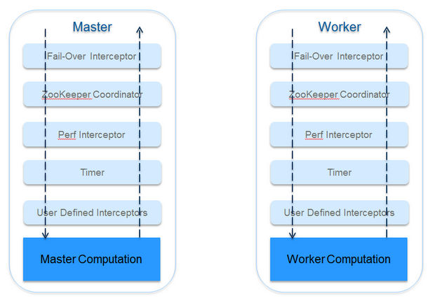

Guagua is designed as a kenel-plugin mode like Eclipse, Maven. A kenel is defined to run master workers iterations, while all other features are implemented as interceptors. Se system interceptors are provided by default like coordinator and timer, and user interceptors are also supported by setting just a parameter. All customers are considered as first-level citizens in Guagua, any internal or user-related feature can be changed by implementing their own iterceptors.

A user interceptor example which is used to save output at the end of one application:
public class SumOutput extends
BasicMasterInterceptor<GuaguaWritableAdapter<LongWritable>, GuaguaWritableAdapter<LongWritable>> {
private static final Logger LOG = LoggerFactory.getLogger(SumOutput.class);
@Override
public void postApplication(
final MasterContext<GuaguaWritableAdapter<LongWritable>, GuaguaWritableAdapter<LongWritable>> context) {
LOG.info("SumOutput starts to write final sum value to file.");
Path out = new Path(context.getProps().getProperty("guagua.sum.output"));
LOG.info("Writing results to {}", out.toString());
PrintWriter pw = null;
try {
FSDataOutputStream fos = FileSystem.get(new Configuration()).create(out);
pw = new PrintWriter(fos);
pw.println(context.getMasterResult().getWritable().get());
pw.flush();
} catch (IOException e) {
LOG.error("Error in writing output.", e);
} finally {
IOUtils.closeStream(pw);
}
}
}Configure it in command bash:
-Dguagua.master.intercepters=ml.shifu.guagua.mapreduce.example.sum.SumOutput -Dguagua.sum.output=sum-output